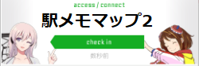

「駅メモマップ2」はモバイルファクトリー社の「駅メモ！ - ステーションメモリーズ！-」というゲームの支援ツールです。
「駅メモマップ」が更新終了とのことで、サイトを引き継いだものです。
駅情報の最新化、機能追加を行っています。
マップはこちらから
駅情報の更新について
旧駅メモマップの最終更新は 2015年頃のもようなので、それ以降はネット情報を元に更新しています。
2021/03 現在、2019/03/19 分まで完了しています (2015年～2019/03/18 は最新化できていない)。